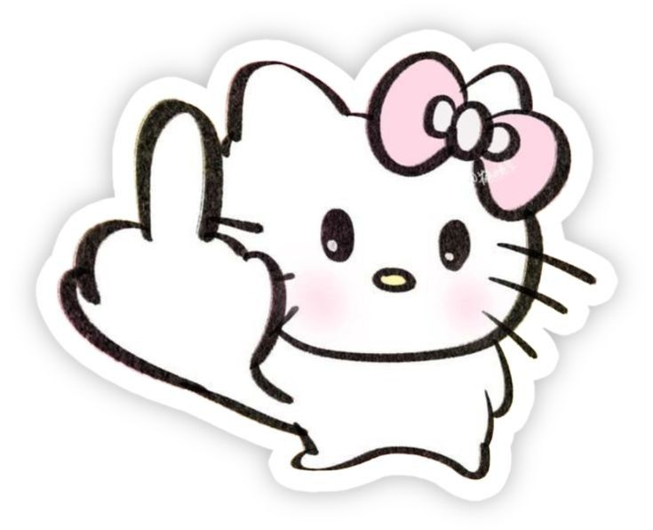
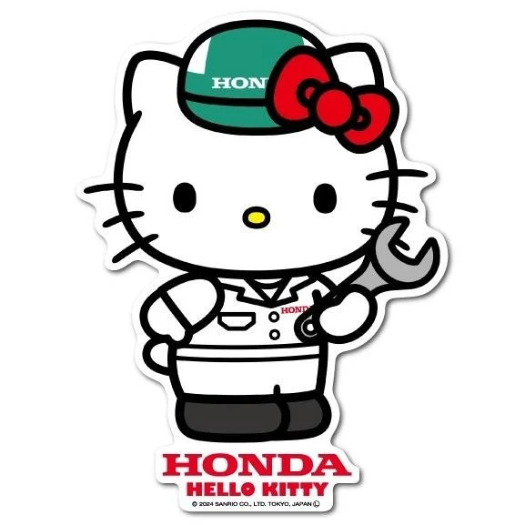
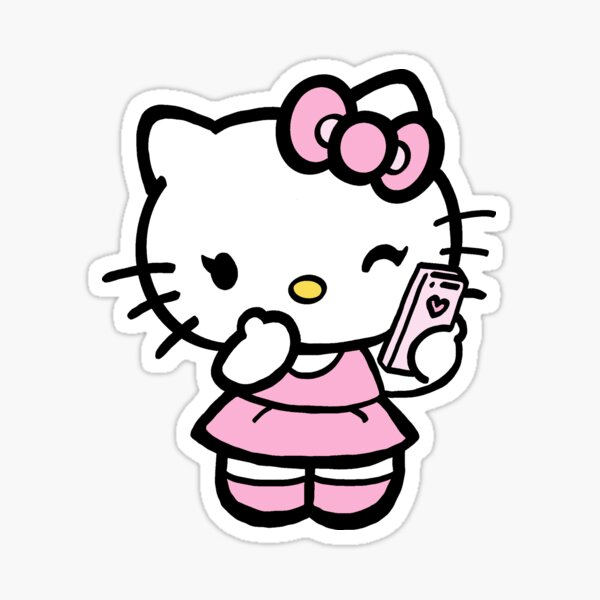

นักเรียนมัธยมปลายผู้หลงใหลในด้านเทคโนโลยี
ดูผลงานของฉันกำลังศึกษาอยู่ชั้นมัธยมศึกษาปีที่ 4 สายการเรียน วิทย์-คณิต นวัตกรรมเทคโนโลยี ที่โรงเรียน ธัญรัตน์
มีความสนใจเป็นพิเศษในด้าน เทคโนโลยี และมีเป้าหมายที่จะศึกษาต่อในคณะ วิทยาศาสตร์
ทักษะความสามารถ: ประกอบหุ่นยนต์ เขียนโค้ดเบื้องต้น

ที่น้องชูมิดเดิ้ลฟิงเก้อเพราะว่าน้องโมโหหิว

คิ้ตตี้นักซ่อมรถของฮอนด้าด้าด้าด้าด้าด้า

น้องคิตตี้กำลังคุยกับแฟนแฟ่ดๆ
อีเมล: your.email@example.com
โทรศัพท์: 08x-xxx-xxxx
Facebook / Instagram: pxmlxpxt_nx2e